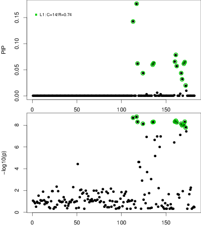

Fine-mapping workflow using summary statistics
This is a workflow that does summary statistics fine-mapping using SuSiE, DAP-G and CAVIAR.
This pipeline was devised by Gao Wang and implemented by Gao Wang with input from Yuxin Zou at The University of Chicago. It can be downloaded from here.
SuSiE is implemented in susieR (please use version 0.6.2+).
susieR is flexible in input format (R data matrices). Since we need to analyze the data with command executables such as DAP-G and CAVIAR we make input format compatible with these tools.
Software preparation
Update SoS and sos-notebook
pip install -U sos sos-notebook
To run SuSiE, Install susieR and dscrutils
devtools::install_github("stephenslab/susieR")
devtools::install_github("stephenslab/dsc", subdir = "dscrutils", force = TRUE)
To run GAP-G and CAVIAR, make sure GSL exists
sudo apt-get install libgsl-dev
and make sure DAP-G and CAVIAR exists under $PATH.
To install a specified version of CAVIAR, eg for commit ID 743038a:
curl -L https://github.com/fhormoz/caviar/tarball/743038a32ae66ea06ee599670cb7939fb80a923f -o caviar.tar.gz \
&& tar -zxvf caviar.tar.gz && cd fhormoz-caviar-*/CAVIAR-C++ && make
You should then see files CAVIAR eCAVIAR mupCAVIAR setCAVIAR under the current directory fhormoz-caviar-*/CAVIAR-C++. You can either move them to your system’s $PATH, or just leave them there and use -b option in sos run call, see examples in workflow demo commands below.
Same for DAP-G,
curl -L https://github.com/xqwen/dap/tarball/ef11b263ae5e11b9e2e295757927877c03274095 -o dap.tar.gz \
&& tar -zxvf dap.tar.gz && cd xqwen-dap-*/dap_src && make
You should see file dap-g under xqwen-dap-*/dap_src.
Input data
Input data relies on the output of the pipeline summary_statistics_wrangler.ipynb (an example input data-set for this pipeline can be found in that notebook). The input format is the same for SuSiE, DAP and CAVIAR.
Output format
Output is still work in progress.
Currently they are just R or Python data objects *.rds or *.pkl files and can be loaded via dscrutils::read_dsc. It contains the most comprehensive information and can be used to generate more succinct output files downstream. Additionally there will be a PDF file to visualize PIP and original $z$ scores.
%cd ~/GIT/github/fine-mapping
/scratch/midway2/gaow/GIT/github/fine-mapping
The workflow
sos run workflow/summary_statistics_finemapping.ipynb -h
usage: sos run workflow/summary_statistics_finemapping.ipynb
[workflow_name | -t targets] [options] [workflow_options]
workflow_name: Single or combined workflows defined in this script
targets: One or more targets to generate
options: Single-hyphen sos parameters (see "sos run -h" for details)
workflow_options: Double-hyphen workflow-specific parameters
Workflows:
susie_bhat
susie_z
dap
caviar
finemap
Global Workflow Options:
--loci . (as path)
Loci file
--ss-data-prefix . (as path)
summary statistics file prefix
--annotation uniform
annotation "tag"
--n 0 (as int)
sample size
--var-y 0 (as int)
variance of phenotype. Set to zero for "unspecified"
--job-size 80 (as int)
For cluster jobs, number of loci to analyze per job
Sections
susie_bhat_1: Run SuSiE bhat version
Workflow Options:
--susie-pve 0.1 (as float)
Set pve to 0.0 to estimate from data
--[no-]pve-is-total (default to False)
use --pve-is-total to indicate the pve set above is for
the entire loci and should be divided over number of
variables
--[no-]susie-est-residual (default to False)
Whether or not to estimate residual variance
--L 5 (as int)
Set maximum number of effect variables
--[no-]track-fit (default to False)
Whether or not to keep fit from each iteration, for
debug purpose.
susie_z_1: Run SuSiE Z score version
Workflow Options:
--L 5 (as int)
Set maximum number of effect variables
--[no-]track-fit (default to False)
Whether or not to keep fit from each iteration, for
debug purpose.
dap_1: Run DAP-G
Workflow Options:
--args ''
Extra arguments to pass to DAP
caviar_1: Run CAVIAR
Workflow Options:
--args ''
Extra arguments to pass to CAVIAR
finemap_1: Run FINEMAP
Workflow Options:
--k NULL
K parameter
--args ''
Extra arguments to pass to CAVIAR
*_2: Summarize Fine-mapping results
[global]
# Loci file
parameter: loci = path()
# summary statistics file prefix
parameter: ss_data_prefix = path()
# annotation "tag"
parameter: annotation = "uniform"
# sample size
parameter: n = 0
# variance of phenotype. Set to zero for "unspecified"
parameter: var_y = 0
# For cluster jobs, number of loci to analyze per job
parameter: job_size = 80
fail_if(not loci.is_file(), msg = 'Please specify valid path for --loci')
fail_if(ss_data_prefix.is_file(), msg = '--ss-data-prefix should be a path not a file (usually file without extension, if using input from my data wrangling pipeline)')
ss_data_prefix = ss_data_prefix.absolute()
chunks = [x.strip().split() for x in open(f'{loci:a}').readlines() if not x.strip().startswith('#')]
chunks = [x[3] if len(x) == 4 else "%s_%s_%s" % (x[0], x[1], x[2]) for x in chunks]
data = [f'{ss_data_prefix}/{x}/{x}.summary_stats.gz' for x in chunks]
def fmtP(x):
return str(x).replace(".", "p").replace(' ', '_').replace('"', "").replace("'", "").replace("-", '_')
def is_data_file_empty(f, min_row = 0):
if f.stat().st_size == 0:
return True
import pandas
try:
x = pandas.read_csv(str(f), compression='gzip', nrows=min_row + 1, delim_whitespace = True)
except pandas.errors.EmptyDataError:
return True
if x.shape[1] == 1:
return True
if x.shape[0] <= min_row:
return True
return False
SuSiE $\hat{b}$ version
# Run SuSiE bhat version
[susie_bhat_1]
fail_if(n<=2, msg = 'Please specify valid sample size --n')
depends: R_library('data.table'), R_library('susieR')
# Set pve to 0.0 to estimate from data
parameter: susie_pve = 0.1
# use --pve-is-total to indicate the pve set above is for the entire loci
# and should be divided over number of variables
parameter: pve_is_total = False
# Whether or not to estimate residual variance
parameter: susie_est_residual = False
# Set maximum number of effect variables
parameter: L = 5
# Whether or not to keep fit from each iteration,
# for debug purpose.
parameter: track_fit = False
#
suffix = f'SuSiE_B.L_{L}.prior_{fmtP(susie_pve)}.res_var_{str(susie_est_residual).lower()}'
var_y_str = f'var_y = {var_y},' if var_y > 0 else ''
#
input: data, group_by = 1
output: f'{_input:nn}.{annotation}.{suffix}.rds'
skip_if(is_data_file_empty(_input))
task: trunk_workers = 1, trunk_size = job_size, walltime = '10m', mem = '8G', cores = 1, tags = f'{step_name}_{_output:bn}'
prior_str = f'read.table(gzfile("{_input:nn}.{annotation}.gz"))[,2]' if os.path.isfile(f"{_input:nn}.{annotation}.gz") else 'NULL'
fail_if(annotation != 'uniform' and prior_str == 'NULL', msg = f"Cannot find annotation file for ``{annotation}``. Please use --annotation uniform if you do not want to apply any annotations")
R: expand = '${ }', stderr = f'{_output:n}.stderr', stdout = f'{_output:n}.stdout'
data = read.table(gzfile(${_input:ar}), head = F, stringsAsFactors = FALSE)
prior = ${prior_str}
r = as.matrix(data.table::fread("zcat ${_input:nn}.LD.gz"))
if (ncol(data) == 3) {
bhat = data[,2]
shat = data[,3]
p_values = 2 * pt(-abs(bhat / shat), df = ${n} - 2)
z_scores = abs(qnorm(p_values/2)) * sign(bhat)
} else {
bhat = data[,2]
shat = rep(1, length(bhat))
z_scores = data[,2]
}
library(susieR)
L = min(${L}, length(z_scores))
s = susie_bhat(bhat, shat, r, ${n}, ${var_y_str} r_tol = 5e-3, L = L, min_abs_corr = 0.1,
${'estimate_prior_variance=TRUE' if susie_pve == 0 else 'scaled_prior_variance=' + str(susie_pve) + ('/length(bhat)' if pve_is_total else '')},
${'estimate_residual_variance=TRUE' if susie_est_residual else 'estimate_residual_variance=FALSE'},
prior_weights=prior, track_fit=${"T" if track_fit else "F"})
s$prior = prior
s$z = z_scores
s$var_names = data[,1]
if (${susie_pve} == 0 && ${int(susie_est_residual)}) print(paste(c("Estimated PVE:", round(s$V/s$sigma2, 4)), collapse = ' '))
if (${"T" if track_fit else "F"}) susie_plot_iteration(s, L, ${_input:nr})
saveRDS(s, ${_output:r})
SuSiE $z$ version
# Run SuSiE Z score version
[susie_z_1]
depends: R_library('data.table'), R_library('susieR')
# Set maximum number of effect variables
parameter: L = 5
# Whether or not to keep fit from each iteration,
# for debug purpose.
parameter: track_fit = False
#
suffix = f'SuSiE_Z.L_{L}'
#
input: data, group_by = 1
output: f'{_input:nn}.{annotation}.{suffix}.rds'
skip_if(is_data_file_empty(_input))
task: trunk_workers = 1, trunk_size = job_size, walltime = '10m', mem = '8G', cores = 1, tags = f'{step_name}_{_output:bn}'
prior_str = f'read.table(gzfile("{_input:nn}.{annotation}.gz"))[,2]' if os.path.isfile(f"{_input:nn}.{annotation}.gz") else 'NULL'
fail_if(annotation != 'uniform' and prior_str == 'NULL', msg = f"Cannot find annotation file for ``{annotation}``. Please use --annotation uniform if you do not want to apply any annotations")
R: expand = '${ }', stderr = f'{_output:n}.stderr', stdout = f'{_output:n}.stdout'
data = read.table(gzfile(${_input:ar}), head = F, stringsAsFactors = FALSE)
prior = ${prior_str}
r = as.matrix(data.table::fread("zcat ${_input:nn}.LD.gz"))
if (ncol(data) == 3) {
bhat = data[,2]
shat = data[,3]
if (${n} > 0) {
p_values = 2 * pt(-abs(bhat / shat), df = ${n} - 2)
z_scores = abs(qnorm(p_values/2)) * sign(bhat)
} else {
z_scores = data[,2] / data[,3]
}
} else {
z_scores = data[,2]
}
library(susieR)
L = min(${L}, length(z_scores))
s = susie_z(z_scores, r, r_tol = 5e-3, L = L, min_abs_corr = 0.1,
prior_weights=prior, track_fit=${"T" if track_fit else "F"})
s$prior = prior
s$z = z_scores
s$var_names = data[,1]
if (${"T" if track_fit else "F"}) susie_plot_iteration(s, L, ${_input:nr})
saveRDS(s, ${_output:r})
DAP-G
# Run DAP-G
[dap_1]
fail_if(n<=2, msg = 'Please specif valid sample size --n')
# Extra arguments to pass to DAP
parameter: args = ''
suffix = f'DAP{"."+fmtP(args) if len(args) else ""}'
#
depends: executable('dap-g'), Py_Module('pandas'), Py_Module('numpy')
input: data, group_by = 1
output: f'{_input:nn}.{annotation}.{suffix}.pkl'
skip_if(is_data_file_empty(_input))
task: trunk_workers = 1, trunk_size = job_size, walltime = '10m', mem = '8G', cores = 1, tags = f'{step_name}_{_output:bn}'
prior_file = f"{_input:ann}.{annotation}.gz" if os.path.isfile(f"{_input:ann}.{annotation}.gz") else None
fail_if(annotation != 'uniform' and prior_file is None, msg = f"Cannot find annotation file for ``{annotation}``. Please use --annotation uniform if you do not want to apply any annotations")
python: expand = '${ }', stderr = f'{_output:n}.stderr', workdir = f'{_output:ad}'
import sys
import pandas as pd
import numpy as np
import os, subprocess
import pickle
def run_dap_ss(prefix, data_file, ld_file, n, varY, prior_file = None, args = ''):
cmd = ['dap-g', '-d_est', f'<(zcat {data_file})', '-d_ld', f'<(zcat {ld_file})', '-d_n', n, '-d_syy', varY, '-o', f'{prefix}.result', '-l', f'{prefix}.stderr', '--all', args]
if prior_file is not None:
cmd.extend(['-p', f'<(zcat {prior_file})'])
cmd = ' '.join(map(str,cmd))
sys.stderr.write(cmd + '\n')
subprocess.Popen(cmd, shell=True, executable='/bin/bash')
def extract_dap_output(prefix):
out = [x.strip().split() for x in open(f'{prefix}.result').readlines()]
pips = []
clusters = []
still_pip = True
for line in out:
if len(line) == 0:
continue
if len(line) > 2 and line[2] == 'cluster_pip':
still_pip = False
continue
if still_pip and (not line[0].startswith('((')):
continue
if still_pip:
pips.append([line[1], float(line[2]), float(line[3]), int(line[4])])
else:
clusters.append([len(clusters) + 1, float(line[2]), float(line[3])])
pips = pd.DataFrame(pips, columns = ['snp', 'snp_prob', 'snp_log10bf', 'cluster'])
clusters = pd.DataFrame(clusters, columns = ['cluster', 'cluster_prob', 'cluster_avg_r2'])
clusters = pd.merge(clusters, pips.groupby(['cluster'])['snp'].apply(','.join).reset_index(), on = 'cluster')
return {'snp': pips, 'set': clusters}
prior_file = None if ${prior_file is None} else "${prior_file}"
run_dap_ss(${_output:bnr}, ${_input:ar}, "${_input:nn}.LD.gz", ${n}, ${1 if var_y == 0 else var_y}, prior_file, ${args})
res = extract_dap_output(${_output:anr})
res['var_names'] = np.loadtxt(${_input:ar}, dtype = str, usecols=0)
ss = np.loadtxt(${_input:ar}, dtype = str)
if ss.shape[1] == 3:
res['z'] = ss[:,1].astype(float)/ss[:,2].astype(float)
else:
res['z'] = ss[:,1].astype(float)
if prior_file is not None:
res['prior'] = np.loadtxt(prior_file, dtype = float, usecols=1)
pickle.dump(res, open(${_output:ar}, 'wb'))
CAVIAR
# Run CAVIAR
[caviar_1]
depends: executable('CAVIAR'), R_library('dplyr>=0.7.7'), R_library('readr'), R_library('magrittr'), R_library('dscrutils') # can be installed via `devtools::install_github("stephenslab/dsc",subdir = "dscrutils", force = TRUE)`
# Extra arguments to pass to CAVIAR
parameter: args = ''
suffix = f'CAVIAR{"."+fmtP(args) if len(args) else ""}'
#
input: data, group_by = 1
output: f'{_input:nn}.{suffix}.rds'
skip_if(is_data_file_empty(_input))
task: trunk_workers = 1, trunk_size = job_size, walltime = '15m', mem = '8G', cores = 1, tags = f'{step_name}_{_output:bn}'
R: expand = '${ }', stderr = f'{_output:n}.log', stdout = f'{_output:n}.log'
library(dplyr)
library(readr)
library(magrittr)
#' CAVIAR I/O
prefix = ${_input:nnr}
cfg = list( prefix=paste0(prefix,".CAVIAR"),
z=paste0(prefix,".CAVIAR.z"),
ld=paste0(prefix,".LD.txt"),
ld_gz=paste0(prefix,".LD.gz"),
set=paste0(prefix,".CAVIAR_set"),
post=paste0(prefix,".CAVIAR_post"),
log=paste0(prefix,".CAVIAR.log"))
data = read.table(gzfile(${_input:ar}), head = F, stringsAsFactors = FALSE)
if (ncol(data) == 3) {
if (${n} > 0) {
p_values = 2 * pt(-abs(data[,2] / data[,3]), df = ${n} - 2)
z_scores = abs(qnorm(p_values/2)) * sign(data[,2])
} else {
z_scores = data[,2] / data[,3]
}
data = cbind(data[,1], z_scores)
write.table(data,cfg$z,quote=F,col.names=F,row.names=F)
} else {
z_scores = data[,2]
system("ln -s ${_input} ${_input:nnr}.CAVIAR.z")
}
#' Run CAVIAR
#' https://github.com/fhormoz/caviar
run_caviar <- function(cfg, args = "")
{
dscrutils::run_cmd(paste("zcat", cfg$ld_gz, ">", cfg$ld), ferr = FALSE)
cmd = paste("CAVIAR", "-z", cfg$z, "-l", cfg$ld, "-o", cfg$prefix, args)
dscrutils::run_cmd(cmd)
unlink(cfg$ld, force=TRUE)
unlink(cfg$z, force=TRUE)
if(!all(file.exists(cfg$post, cfg$set, cfg$log))) {
stop("Cannot find one of the post, set, and log files")
}
log <- readLines(cfg$log)
# read output tables
snp <- read.delim(cfg$post)
stopifnot(ncol(snp) == 3)
names(snp) <- c("snp", "snp_prob_set", "snp_prob")
snp$snp <- as.character(snp$snp)
snp <- rank_snp(snp)
# `set` of snps
set <- readLines(cfg$set)
set_ordered <- left_join(data_frame(snp = set), snp, by = "snp") %>%
arrange(rank) %$% snp
return(list(snp=snp, set=set_ordered))
}
rank_snp <- function(snp) {
snp <- arrange(snp, -snp_prob) %>%
mutate(
rank = seq(1, n()),
snp_prob_cumsum = cumsum(snp_prob) / sum(snp_prob)) %>%
select(rank, snp, snp_prob, snp_prob_cumsum, snp_prob_set)
return(snp)
}
res = run_caviar(cfg, "${args}")
res$z = z_scores
res$var_names = data[,1]
saveRDS(res, ${_output:ar})
FINEMAP
# Run FINEMAP
[finemap_1]
depends: executable('finemap'), R_library('dplyr>=0.7.7'), R_library('readr'), R_library('magrittr'), R_library('dscrutils') # can be installed via `devtools::install_github("stephenslab/dsc",subdir = "dscrutils", force = TRUE)`
# K parameter
parameter: k = 'NULL'
# Extra arguments to pass to CAVIAR
parameter: args = ''
suffix = f'FINEMAP{"."+fmtP(args) if len(args) else ""}'
fail_if(n < 2, msg = 'Sample size is invalid. Please set it properly via --n.')
#
input: data, group_by = 1
output: f'{_input:nn}.{suffix}.rds'
skip_if(is_data_file_empty(_input, min_row = 1))
task: trunk_workers = 1, trunk_size = job_size, walltime = '15m', mem = '8G', cores = 1, tags = f'{step_name}_{_output:bn}'
R: expand = '${ }', stderr = f'{_output:n}.log', stdout = f'{_output:n}.log'
library(dplyr)
library(readr)
library(magrittr)
#' FINEMAP I/O
prefix = ${_input:nnr}
cfg = list( prefix=paste0(prefix,".FINEMAP"),
z=paste0(prefix,".FINEMAP.z"),
ld=paste0(prefix,".LD.ld"),
ld_gz=paste0(prefix,".LD.gz"),
config=paste0(prefix,".FINEMAP.config"),
k=paste0(prefix,".FINEMAP.k"),
snp=paste0(prefix,".FINEMAP.snp"),
meta=paste0(prefix,".FINEMAP.master"),
log=paste0(prefix,".FINEMAP.log"))
data = read.table(gzfile(${_input:ar}), head = F, stringsAsFactors = FALSE)
if (ncol(data) == 3) {
if (${n} > 0) {
p_values = 2 * pt(-abs(data[,2] / data[,3]), df = ${n} - 2)
z_scores = abs(qnorm(p_values/2)) * sign(data[,2])
} else {
z_scores = data[,2] / data[,3]
}
data = cbind(data[,1], z_scores)
write.table(data,cfg$z,quote=F,col.names=F,row.names=F)
} else {
z_scores = data[,2]
system("ln -s ${_input} ${_input:nnr}.FINEMAP.z")
}
if (!is.null(${k})) {
write.table(t(${k}),cfg$k,quote=F,col.names=F,row.names=F)
write("z;ld;snp;config;k;log;n-ind",file=cfg$meta)
write(paste(cfg$z, cfg$ld, cfg$snp, cfg$config, cfg$k, cfg$log, ${n}, sep=";"),
file=cfg$meta,append=TRUE)
} else {
write("z;ld;snp;config;log;n-ind",file=cfg$meta)
write(paste(cfg$z, cfg$ld, cfg$snp, cfg$config, cfg$log, ${n}, sep=";"),
file=cfg$meta,append=TRUE)
}
#' Run FINEMAP 1.1
run_finemap <- function(cfg, args = "")
{
dscrutils::run_cmd(paste("zcat", cfg$ld_gz, ">", cfg$ld), ferr = FALSE)
cmd = paste("finemap --sss --log", "--in-files", cfg$meta, args)
dscrutils::run_cmd(cmd)
unlink(cfg$ld, force=TRUE)
unlink(cfg$z, force=TRUE)
if(!all(file.exists(cfg$post, cfg$set, cfg$log))) {
stop("Cannot find one of the post, set, and log files")
}
log <- readLines(cfg$log)
# read output tables
snp = read.table(cfg$snp,header=TRUE,sep=" ")
snp$snp = as.character(snp$snp)
snp = rank_snp(snp)
config = read.table(cfg$config,header=TRUE,sep=" ")
# extract number of causal
ncausal = finemap_extract_ncausal(cfg$log)
return(list(snp=snp, set=config, ncausal=ncausal))
}
rank_snp <- function(snp) {
snp <- arrange(snp, -snp_prob) %>%
mutate(
rank = seq(1, n()),
snp_prob_cumsum = cumsum(snp_prob) / sum(snp_prob)) %>%
select(rank, snp, snp_prob, snp_prob_cumsum, snp_log10bf)
return(snp)
}
finemap_extract_ncausal <- function(logfile)
{
lines <- grep("->", readLines(logfile), value = TRUE)
lines <- gsub("\\(|\\)|>", "", lines)
splits <- strsplit(lines, "\\s+")
tab <- data.frame(
ncausal_num = sapply(splits, function(x) as.integer(x[2])),
ncausal_prob = sapply(splits, function(x) as.double(x[4])))
tab <- mutate(tab, type = ifelse(duplicated(ncausal_num), "post", "prior"))
return(tab)
}
res = run_finemap(cfg, "${args}")
res$z = z_scores
res$var_names = data[,1]
saveRDS(res, ${_output:ar})
Make diagnostic plot
# Summarize Fine-mapping results
[*_2 (plot PIP)]
depends: R_library('dscrutils') # can be installed via `devtools::install_github("stephenslab/dsc",subdir = "dscrutils", force = TRUE)`
output: f'{_input:n}.pdf'
task: trunk_workers = 1, trunk_size = job_size * 3, walltime = '2m', mem = '2G', cores = 1, tags = f'{step_name}_{_output:bn}'
R: expand = '${ }', stderr = f'{_output:n}.log', stdout = f'{_output:n}.stdout'
s = dscrutils::read_dsc(${_input:r})
# print something to log
write(format(Sys.time(), "%a %b %d %X %Y"), stderr())
library(susieR)
is_susie = !is.null(s$elbo)
if (is_susie) {
write(paste('SuSiE objective:', susie_get_objective(s), "at L =", nrow(s$alpha)), stderr())
} else {
snp = s$snp
snp = snp[match(s$var_names, snp$snp),]
s$pip = snp$snp_prob
class(s) = 'susie'
}
# make some plots
pdf(${_output:r}, 8,9,pointsize=16)
par(mar=c(2,4,0,0), omi=c(0,0,0,0), oma=c(0,0,0,0),mfrow=c(2,1))
susie_plot(s,y='PIP',add_legend=T)
susie_plot(s,y='z')
dev.off()
ordering = order(s$pip, decreasing=T)
if (is.null(s$prior)) s$prior = rep(1/length(ordering),length(ordering))
for (i in 1:5) {
write(paste0("#", i, " pip-ranked SNP ", s$var_names[ordering[i]], " has z-score ",
round(s$z[ordering[i]],2), " pip ", round(s$pip[ordering[i]],4), " and prior ", round(s$prior[ordering[i]],4)), stderr())
}
ordering = order(abs(s$z), decreasing=T)
for (i in 1:5) {
write(paste0("#", i, " z-ranked SNP ", s$var_names[ordering[i]], " has z-score ",
round(s$z[ordering[i]],2), " pip ", round(s$pip[ordering[i]],4), " and prior ", round(s$prior[ordering[i]],4)), stderr())
}
Example usage
Commands below run the pipeline on a local computer.
For UChicago midway users: to run these pipelines on RCC cluster, please take a look at midway2.yml file (found in this repository), modify it as you see fit, and replace -q none -j 8 with:
-c workflow/midway2.yml -q midway2 -J 40
SuSiE $\hat{b}$
GWAS example run (with annotations):
sos run workflow/summary_statistics_finemapping.ipynb susie_bhat \
--loci /home/gaow/tmp/19-Dec-2018/SCZ/chunks.list \
--ss-data-prefix /home/gaow/tmp/19-Dec-2018/SCZ/Summary_statistics \
--annotation atac-seq \
--n 79845 \
--susie-pve 0.005 --L 5 \
-q none -j 8
INFO: Running [32msusie_bhat_1[0m: Run SuSiE bhat version
INFO: [32msusie_bhat_1[0m (index=0) is [32mignored[0m due to saved signature
INFO: output: [32m/home/gaow/tmp/19-Dec-2018/SCZ/Summary_statistics/chr9_84630941_84813641/chr9_84630941_84813641.atac-seq.SuSiE_B.L_5.prior_0p005.res_var_true.rds[0m
INFO: Running [32msusie_bhat_2[0m: Summarize Fine-mapping results
INFO: [32msusie_bhat_2[0m (index=0) is [32mignored[0m due to saved signature
INFO: output: [32m/home/gaow/tmp/19-Dec-2018/SCZ/Summary_statistics/chr9_84630941_84813641/chr9_84630941_84813641.atac-seq.SuSiE_B.L_5.prior_0p005.res_var_true.pdf[0m
INFO: Workflow susie_bhat (ID=897b7f9c97b1a5d0) is ignored with 2 ignored steps.
%preview /home/gaow/tmp/19-Dec-2018/SCZ/Summary_statistics/chr9_84630941_84813641/chr9_84630941_84813641.atac-seq.SuSiE_B.L_5.prior_0p005.res_var_true.pdf -s png --dpi 50
%preview /home/gaow/tmp/19-Dec-2018/SCZ/Summary_statistics/chr9_84630941_84813641/chr9_84630941_84813641.atac-seq.SuSiE_B.L_5.prior_0p005.res_var_true.log
Fri Dec 21 03:27:56 PM 2018
SuSiE objective: -113313.785692437 at L = 5
#1 pip-ranked SNP 9:84789089:T:C has z-score -5.77 pip 0.123 and prior 1e-04
#2 pip-ranked SNP 9:84700694:T:C has z-score -2.42 pip 0.1168 and prior 1e-04
#3 pip-ranked SNP 9:84725047:T:C has z-score -1.9 pip 0.1166 and prior 1e-04
eQTL example run (without annotations):
sos run workflow/summary_statistics_finemapping.ipynb susie_bhat \
--loci /home/gaow/tmp/19-Dec-2018/metasoft/one_loci.txt \
--ss-data-prefix /home/gaow/tmp/19-Dec-2018/metasoft/gtex_metasoft_summary_stats \
--n 800 \
--susie-pve 0.1 --L 5 \
-q none -j 8
INFO: Running [32msusie_bhat_1[0m: Run SuSiE bhat version
INFO: output: [32m/home/gaow/tmp/19-Dec-2018/metasoft/gtex_metasoft_summary_stats/ENSG00000181404.15/ENSG00000181404.15.uniform.SuSiE_B.L_5.prior_0p1.res_var_false.rds[0m
INFO: Running [32msusie_bhat_2[0m: Summarize Fine-mapping results
null device
1
INFO: output: [32m/home/gaow/tmp/19-Dec-2018/metasoft/gtex_metasoft_summary_stats/ENSG00000181404.15/ENSG00000181404.15.uniform.SuSiE_B.L_5.prior_0p1.res_var_false.pdf[0m
INFO: Workflow susie_bhat (ID=10c68937a3df62e9) is executed successfully with 2 completed steps.
%preview /home/gaow/tmp/19-Dec-2018/metasoft/gtex_metasoft_summary_stats/ENSG00000181404.15/ENSG00000181404.15.uniform.SuSiE_B.L_5.prior_0p1.res_var_false.pdf -s png --dpi 50
SuSiE $z$
GWAS example run (with annotations):
sos run workflow/summary_statistics_finemapping.ipynb susie_z \
--loci /home/gaow/tmp/19-Dec-2018/SCZ/chunks.list \
--ss-data-prefix /home/gaow/tmp/19-Dec-2018/SCZ/Summary_statistics \
--annotation atac-seq \
--L 5 \
-q none -j 8
INFO: Running [32msusie_z_1[0m: Run SuSiE Z score version
INFO: output: [32m/home/gaow/tmp/19-Dec-2018/SCZ/Summary_statistics/chr9_84630941_84813641/chr9_84630941_84813641.atac-seq.SuSiE_Z.L_5.rds[0m
INFO: Running [32msusie_z_2[0m: Summarize Fine-mapping results
null device
1
INFO: output: [32m/home/gaow/tmp/19-Dec-2018/SCZ/Summary_statistics/chr9_84630941_84813641/chr9_84630941_84813641.atac-seq.SuSiE_Z.L_5.pdf[0m
INFO: Workflow susie_z (ID=faeee78a5b518cd1) is executed successfully with 2 completed steps.
%preview /home/gaow/tmp/19-Dec-2018/SCZ/Summary_statistics/chr9_84630941_84813641/chr9_84630941_84813641.atac-seq.SuSiE_Z.L_5.pdf -s png --dpi 50

DAP
GWAS example run (with annotations):
DAP_EXE_PATH=~/GIT/github/mvarbvs/dsc/modules/linux
sos run workflow/summary_statistics_finemapping.ipynb dap \
--loci /home/gaow/tmp/19-Dec-2018/SCZ/chunks.list \
--ss-data-prefix /home/gaow/tmp/19-Dec-2018/SCZ/Summary_statistics \
--annotation atac-seq \
--n 79845 \
-b $DAP_EXE_PATH \
-q none -j 8
INFO: Running [32mdap_1[0m: Run DAP-G
INFO: output: [32m/home/gaow/tmp/19-Dec-2018/SCZ/Summary_statistics/chr9_84630941_84813641/chr9_84630941_84813641.atac-seq.DAP.pkl[0m
INFO: Running [32mdap_2[0m: Summarize Fine-mapping results
null device
1
INFO: output: [32m/home/gaow/tmp/19-Dec-2018/SCZ/Summary_statistics/chr9_84630941_84813641/chr9_84630941_84813641.atac-seq.DAP.pdf[0m
INFO: Workflow dap (ID=c895e1125141fae4) is executed successfully with 2 completed steps.
%preview /home/gaow/tmp/19-Dec-2018/SCZ/Summary_statistics/chr9_84630941_84813641/chr9_84630941_84813641.atac-seq.DAP.pdf -s png --dpi 50
CAVIAR
GWAS example run:
CAVIAR_EXE_PATH=~/GIT/github/mvarbvs/dsc/modules/linux
sos run workflow/summary_statistics_finemapping.ipynb caviar \
--loci /home/gaow/tmp/19-Dec-2018/SCZ/chunks.list \
--ss-data-prefix /home/gaow/tmp/19-Dec-2018/SCZ/Summary_statistics \
-b $CAVIAR_EXE_PATH --args "'-c 2'" \
-q none -j 8
INFO: Running [32mcaviar_1[0m: Run CAVIAR
INFO: output: [32m/home/gaow/tmp/19-Dec-2018/SCZ/Summary_statistics/chr9_84630941_84813641/chr9_84630941_84813641.CAVIAR._c_2.rds[0m
INFO: Running [32mplot PIP[0m: Summarize Fine-mapping results
null device
1
INFO: output: [32m/home/gaow/tmp/19-Dec-2018/SCZ/Summary_statistics/chr9_84630941_84813641/chr9_84630941_84813641.CAVIAR._c_2.pdf[0m
INFO: Workflow caviar (ID=23c609e929d3e8b1) is executed successfully with 2 completed steps.
%preview /home/gaow/tmp/19-Dec-2018/SCZ/Summary_statistics/chr9_84630941_84813641/chr9_84630941_84813641.CAVIAR._c_2.pdf -s png --dpi 50
eQTL example run:
CAVIAR_EXE_PATH=~/GIT/github/mvarbvs/dsc/modules/linux
sos run workflow/summary_statistics_finemapping.ipynb caviar \
--loci /home/gaow/tmp/19-Dec-2018/metasoft/one_loci.txt \
--ss-data-prefix /home/gaow/tmp/19-Dec-2018/metasoft/gtex_metasoft_summary_stats \
-b $CAVIAR_EXE_PATH --args "'-c 2'" \
-q none -j 8
INFO: Running [32mcaviar_1[0m: Run CAVIAR
INFO: output: [32m/home/gaow/tmp/19-Dec-2018/metasoft/gtex_metasoft_summary_stats/ENSG00000181404.15/ENSG00000181404.15.CAVIAR._c_2.rds[0m
INFO: Running [32mplot PIP[0m: Summarize Fine-mapping results
null device
1
INFO: output: [32m/home/gaow/tmp/19-Dec-2018/metasoft/gtex_metasoft_summary_stats/ENSG00000181404.15/ENSG00000181404.15.CAVIAR._c_2.pdf[0m
INFO: Workflow caviar (ID=157b4cf09027e3f5) is executed successfully with 2 completed steps.
%preview /home/gaow/tmp/19-Dec-2018/metasoft/gtex_metasoft_summary_stats/ENSG00000181404.15/ENSG00000181404.15.CAVIAR._c_2.pdf -s png --dpi 50
FINEMAP
GWAS example run:
FINEMAP_EXE_PATH=~/GIT/github/mvarbvs/dsc/modules/linux
sos run workflow/summary_statistics_finemapping.ipynb finemap \
--loci /home/gaow/tmp/19-Dec-2018/SCZ/chunks.list \
--ss-data-prefix /home/gaow/tmp/19-Dec-2018/SCZ/Summary_statistics \
-b $FINEMAP_EXE_PATH --n 500 \
-q none -j 8
%preview /home/gaow/tmp/19-Dec-2018/SCZ/Summary_statistics/chr9_84630941_84813641/chr9_84630941_84813641.FINEMAP.pdf -s png --dpi 50
eQTL example run:
FINEMAP_EXE_PATH=~/GIT/github/mvarbvs/dsc/modules/linux
sos run workflow/summary_statistics_finemapping.ipynb finemap \
--loci /home/gaow/tmp/19-Dec-2018/metasoft/one_loci.txt \
--ss-data-prefix /home/gaow/tmp/19-Dec-2018/metasoft/gtex_metasoft_summary_stats \
-b $FINEMAP_EXE_PATH --n 500 \
-q none -j 8
%preview /home/gaow/tmp/19-Dec-2018/metasoft/gtex_metasoft_summary_stats/ENSG00000181404.15/ENSG00000181404.15.FINEMAP.pdf -s png --dpi 50
bash: /home/gaow/tmp/19-Dec-2018/metasoft/gtex_metasoft_summary_stats/ENSG00000181404.15/ENSG00000181404.15.FINEMAP.pdf: Permission denied